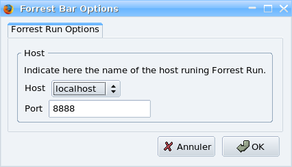

ForrestBar - Firefox toolbar to ease navigation and search of Forrest resources
What is the ForrestBar?
The ForrestBar is a toolbar extension made for the Mozilla and Firefox browsers that eases the navigation of online Apache Forrest resources (including local instances of Forrest running on jetty or as a webapp), Apache links and other Apache projects. It also provides targetted searches for Forrest resources, e.g. search mail lists and issue tracker.
Navigation and developer assistance for Apache Forrest-related documentation frameworks.
Installing the ForrestBar
ForrestBar is currently compatible with Firefox 0.9 - 2.0+ and Mozilla 1.x browsers.
Select this link to install ForrestBar.
If the extension does not automatically install for you when clicking on the link, download ForrestBar by right clicking on the link and select Save As... to save the file to your computer. To install, simply drag the downloaded .xpi file into your browser's window and drop it.
To build (and perhaps enhance) ForrestBar locally rather than downloading, go to FORREST_HOME/tools/forrestbar and run the following command: forrest -f build.xml and the .xpi file will be built for you in the FORREST_HOME/tools/forrestbar/build directory. You can then install it by dragging and dropping as indicated above.
Using the ForrestBar
ForrestBar has the following features.
Forrest menu
This menu gives you direct access to various information about the Forrest project such as :
- The Forrest Site
- The project Subversion repository
- The project Issues manager
- The mailing lists...
The last choice Local Forrest is a direct access to the dynamic forrest site when you use 'forrest run' mode.
Apache menu
This menu gives you direct access to several information about the Apache Software Foundation.
References menu
This menu gives you direct access to several documentation of components used in the Forrest project such as :
- The Apache Ant documentation
- The Apache Cocoon documentation
- The Subversion Book
Devs. menu
This menu provides various general resources for developers.
- Access to "abs-menulinks" which is the internal representation of the "site.xml" navigation configuration. See explanation. Like the Linkmap, it assists with development and debugging.
- Access to the Cocoon Profiler which shows summary information about sitemap processing. See configuration notes.
Dispatcher-dev menu
Internal formats section
These options give you direct access to dispatcher internal xml formats of the current page such as :
- The Intermediate format
- The Body
- The Table of Content
- ...
These accesses are very interesting in development phase to display - in xml format - the content of any dispatcher page.
Structurer section
This option gives you direct access to the structurer which is in charge to generate the current page.
Contracts section
These options give you direct access to an automatically generated page which displays the documentation of the available contracts that you can use.
The ls.contracts option displays the list of standard contracts available whereas the ls.contracts.project only displays the list of contracts specific to the project.
Search menu
This menu lets you search in different Forrest related archives or sites such as :
- The mail (User or Devs) archives lists
- The commits in subversion repository
- The Forrest site
- The Jira Issues - site which manages Forrest issues
To perfom a search in one of these sites, just enter a keyword in the Search field and select the site you want to search in in the Search menu.
Contracts-dev menu
This menu gives you direct access to Dispatcher contracts. You can access to html or fo contract by entering the contract name in the search field and selecting the corresponding prepare or resolve option.
These accesses are very useful to check that the contract you are working on is found by the dispatcher and is syntactically correct.
Configuring the ForrestBar
ForrestBar can be configured in order to change the localhost and port used to connect to Forrest dynamic site, i.e. if you have changed 'forrest run' mode to use a different port.
The defaults are localhost:8888 and can be changed through the Options window :

Once you have entered the correct values for your installation, the ForrestBar saves them in your browser user preferences so that they will be used again next time you will start your browser.